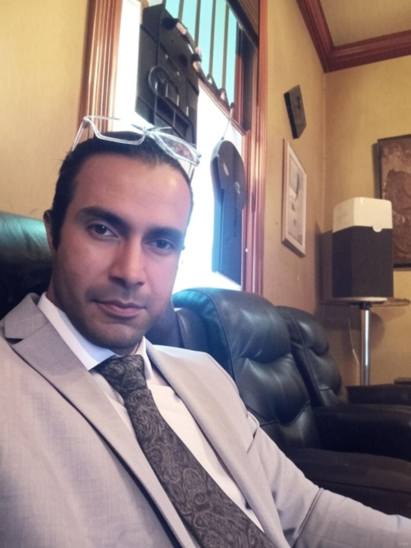

CURRICULUM VITAE
Arash Pashazadeh
Civil Engineer · Ph.D. Researcher in Systems Engineering
University of South Alabama · ap2329@jagmail.southalabama.edu · Google Scholar · LinkedIn · ResearchGate

Personal Information
Date of birth: 16 March 1990
Education and Training
Ph.D. Student, Systems Engineering
Department of Civil, Coastal, and Environmental Engineering, University of South Alabama, Mobile, Alabama, USA.
Supervisor: Dr. Shenghua Wu.
M.Sc., Civil Engineering — Water Engineering and Hydraulic Structures
Department of Civil Engineering, Razi University, Kermanshah, Iran.
Thesis: Development of Hydrologic Models for Flow Routing in Multiple-Branch Systems.
Thesis committee evaluation: Excellent (19.25/20). Supervisor: Dr. Mitra Javan.
B.Sc., Civil Engineering
Department of Civil Engineering, Kurdistan University, Kurdistan, Iran.
HSE-MS Certificate
Certificate No. 137IR0519 · 40 hours of training.
Publications
- Pashazadeh, A., & Javan, M. (2019). Comparison of the Gene Expression Programming, Artificial Neural Network (ANN) and Equivalent Muskingum Inflow models in the Flood Routing of Multiple-Branched Rivers. Theoretical and Applied Climatology. Q2. DOI: 10.1007/s00704-019-03032-2.
- Pashazadeh, A., & Javan, M. (2019). Improvement of lumped models in multiple inflows rivers by principal component analysis and reliability analysis. Acta Geophysica. Q2. DOI: 10.1007/s11600-019-00290-6.
- Pashazadeh, A., Javan, M., & Wu, S. (2025). Development of Nonlinear Muskingum Models in Multiple Inflows River Systems. DOI: 10.21203/rs.3.rs-703757/v1.
- Pashazadeh, A., & Wu, S. (2025). Issues in the Effect of Applied Explicit Numerical Solutions on the Accuracy of Nonlinear Muskingum Models. Ready to submit.
- Song, J., Pashazadeh, A., & Wu, S. (2025). Advances in Microplastic Detection and Interception: A State-of-the-Art Review. Under review.
Detailed Professional Design Record
Designer & Technical Office Engineer — TGEM Construction & Hydropower Company
Dushanbe, Tajikistan · Full-time
Sebzor Hydropower Project, Shokhdara River
- Designed monorail hoist systems on multiple intake shafts to facilitate equipment handling and maintenance.
- Designed concrete ferro-beam structures for the powerhouse to improve structural stability and load distribution under seismic conditions.
- Designed the MIV steel system of the powerhouse for safe and efficient water intake.
- Designed steel support holders for HVAC system installation inside the powerhouse.
- Designed thrust rings around the tailrace pipes and thrust-ring manifold to strengthen high-pressure flow zones.
- Completed structural design of concrete Shafts #1, #2, and #3 for the drainage system of the weir, with shaft depths of about 23 m.
- Designed the truss roof structure and crane-girder / rail systems of the powerhouse.
- Updated the fishpass-intake design to support safe fish migration while managing intake flows.
- Developed gabion-wall protection design on the right side of the weir to reduce erosion and protect structural integrity.
- Designed manhole concrete structures for three penstock sections to provide safe inspection and maintenance access.
- Designed steel holder structures for two permanent bridge ends.
- Prepared sample designs and material specifications for metal works to standardize fabrication and installation procedures.
Design Engineer — Abvarzan Consulting Engineers
Tehran, Iran · Part-time 2018–2020; Full-time 2020–2024
- 2022 · Ahvaz: hydraulic modeling of pump stations.
- 2022 · Ahvaz: hydraulic and structural design of a suction pond for a pump station (approximately 1,400 m²).
- 2022 · Ghadir Project: design of stop logs and sluice gates of intakes.
- 2022 · Ahvaz: design of an industrial steel warehouse structure (approximately 300 m²).
- 2022 · Ahvaz: design of an industrial steel structure for a pump station (approximately 2,500 m²).
- 2021 · Ahvaz: design of a concrete pump-station structure (approximately 2,500 m²).
- 2021 · Ghadir Project: design of the concrete structure of a control room.
- 2021 · Ahvaz: 3D modeling of approximately 15,000 m² of landscape and pump-station buildings using SketchUp.
- 2021 · Balarood Project: design of stop logs and sluice gates of intakes.
- 2021 · Balarood Project: design of an industrial steel structure for a pump station (approximately 2,500 m²).
- 2020 · Andimeshk / Balarood: design of a diversion dam including spillway, ogee section, sediment pond, and related hydraulic components.
- 2020 · Andimeshk / Balarood: design of an industrial steel structure of a pump station (approximately 300 m²).
- 2020 · Andimeshk / Balarood: hydraulic and structural design of a suction-pond concrete structure for a pump station (approximately 250 m²).
- 2020 · Andimeshk / Balarood: design of an industrial steel warehouse structure (approximately 250 m²).
- 2020 · Andimeshk / Balarood: design of the concrete control room of the Balarood project.
- 2020 · Tehran: design of three buried concrete water tanks (360, 216, and 360 m³) and a PRK elevated tank with concrete legs and a height of approximately 20 m.
- 2018 · Tehran: design of the Kordan Dam control room and FRP reinforcement design.
Design Engineer — Arman Pei Alborz Consulting Engineers
Tehran, Iran · Part-time
- 2018 · Tehran: design of the steel structure of a sports club (approximately 2,000 m²).
- 2017 · Pakdasht: design of water-supply and sewage pipe networks for the environmental-relocation project transferring pollution-related jobs from Tehran to Pakdasht.
- 2017 · Pakdasht: design of the street network for the same environmental-relocation project.
- 2016 · Tehran: design of water-supply and sewage pipe networks for an approximately 90,000 m² urban-planning project in the 6th phase of Parand.
- 2016 · Noorabad-Delfan: design of water-supply and sewage pipe networks for an approximately 80,000 m² urban-planning project.
- 2015 · Zanjan: design of a 16-floor residential reinforced-concrete building.
- 2014 · Noorabad-Delfan: member of the design team for 1,200 residential units in an approximately 80,000 m² urban-planning project.
- Various years: design of reinforced-concrete retaining walls.
- Various years: design of pipeline valves and their concrete structural chambers.
Related engineering work reflected in earlier CV versions
- Design of concrete and steel structures of agricultural pump stations.
- Design of agricultural water and drainage networks.
- Design of hydraulic structures for agricultural equipment, including valve chambers and small check dams in farm canals.
- Designer and technical-office engineering in steel/concrete structures, hydropower, water, and civil infrastructure.
Research and Work Interests
Numerical hydrologic and hydraulic modeling; flood forecasting; stormwater management; porous media; machine learning; artificial intelligence programming; aquatic and non-aquatic structures design; coastal and floating systems; CFD; sensing; experimental hydrodynamics; professional programming for civil engineering applications; network design; and web development.
Publications
This list is synchronized directly with the Publications page and updates automatically when publications are added or edited.
- Loading current publication list…
Technical and Digital Skills
Water / Hydraulics: Flow 3D, EPANET, HEC-RAS, HAMMER, WEAP, Water/Sewer CAD; hydraulic and hydrologic flow-routing models; pump-station hydraulics; agricultural water and drainage systems; water-supply structures.
Programming / Data: Python, MATLAB; machine learning, optimization, signal processing, IMU analysis, and engineering-code development.
CFD / Research: OpenFOAM, numerical modeling, wave-flume testing, experimental hydrodynamics, sensing, and data synthesis.
Structural / Civil: SAP2000, SAFE, ETABS, ABAQUS, Civil 3D, PROKON; steel and reinforced-concrete structures, industrial structures, retaining walls, and support structures.
Geotechnical: GeoStudio / Geo Office tools including SEEP/W, SLOPE/W, SIGMA/W, QUAKE/W, and CTRAN/W; PLAXIS.
Artificial Intelligence / Intelligent Systems: ANN (MLP, RBF), GEP, GP, GeneXproTools, NeuroSolutions, ANFIS, and CANFIS.
Optimization / Statistics: Genetic Algorithm, Particle Swarm Optimization, Ant Colony Optimization, Bat Algorithm; factor analysis, risk analysis, regression analysis, reliability analysis, and principal component analysis.
Drawing / Visualization: AutoCAD, SketchUp, Photoshop.
General: Microsoft Project, Excel, Word, PowerPoint, Publisher.
Web / Network / Civil Programming: professional programming for civil-engineering applications, network design, and web development.
Language Skills
- English: TOEFL iBT 104/120 (16 Sep. 2024): Reading 26/30, Listening 28/30, Speaking 21/30, Writing 29/30.
- Earlier TOEFL record: 107/120 (26 Apr. 2022): Reading 30/30, Listening 30/30, Speaking 19/30, Writing 28/30.
- Persian: Fluent in oral, aural, and writing.
- Kurdish: Fluent in oral, aural, and writing.
- Arabic: Fluent in aural and writing.
Honors and Memberships
- Ranked 30th nationwide in Iran (2018) in the Ph.D. candidate selection examination for Water Resources Management Engineering, evaluated by the National Organization of Educational Testing (NOET).
- Member, Tehran Construction Engineering Organization (TCEO), Membership No. 1030142105.
- Member, Iran Value Engineering Association, Membership No. 381452.
Website Note
This About page is the consolidated CV-style version built from the uploaded CV files. The separate Research, Projects, Publications, Conferences, and Contact pages in the site remain available for ongoing updates through the Admin panel.
Current Website Record — Automatically Updated
The sections below are loaded from the same website database used by the Research, Projects, and Conferences pages. Changes made in the Admin panel appear here automatically.